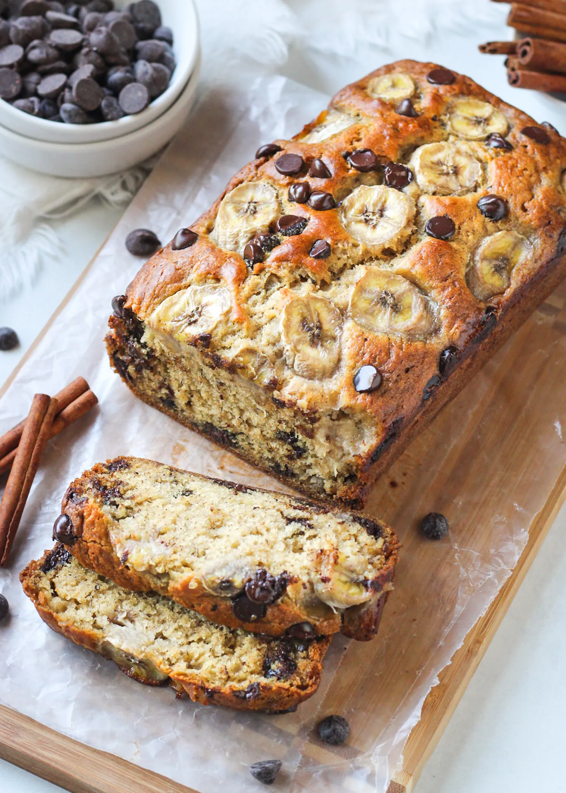

Banana Bread

Description
This Banana Bread recipe is moist, flavorful, and easy to make. Perfect for breakfast, dessert, or a snack with a cup of coffee or tea. The ripe bananas add sweetness and depth of flavor to this classic recipe.
Ingredients
- 3 ripe bananas, mashed
- 1/2 cup butter, melted
- 1 cup sugar
- 2 eggs, beaten
- 1 teaspoon vanilla extract
- 1 teaspoon baking soda
- 1/4 teaspoon salt
- 1 1/2 cups all-purpose flour
- 1/2 cup chopped walnuts (optional)
Steps
- Preheat your oven to 350°F (175°C). Grease a 4x8 inch loaf pan with butter or line it with parchment paper.
- In a large bowl, mash the bananas with a fork until smooth.
- Mix in the melted butter to the mashed bananas.
- Stir in the sugar, eggs, and vanilla extract.
- In a separate bowl, whisk together the baking soda, salt, and flour.
- Add the dry ingredients to the banana mixture and stir until just combined. Be careful not to overmix.
- If desired, fold in the chopped walnuts for some crunch and extra flavor.
- Pour the batter into the prepared loaf pan and smooth the top with a spatula.
- Bake for 60-65 minutes, or until a toothpick inserted into the center of the bread comes out clean.
- Let the bread cool in the pan for 10 minutes, then transfer to a wire rack to cool completely before slicing.
Back to Home